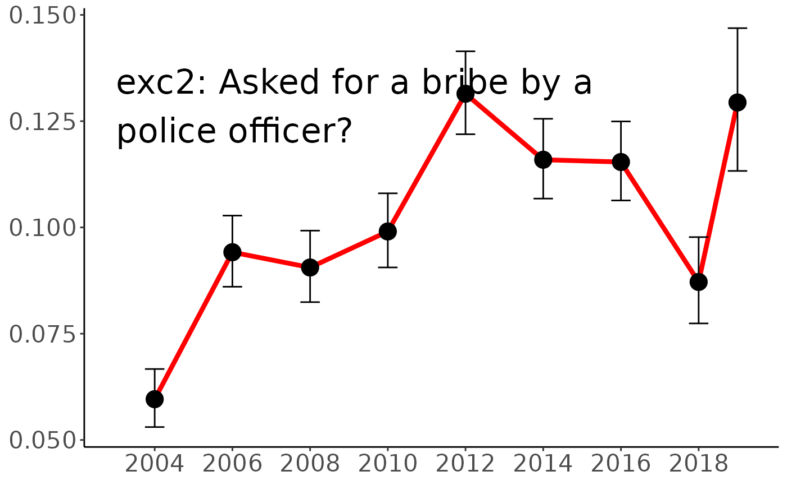
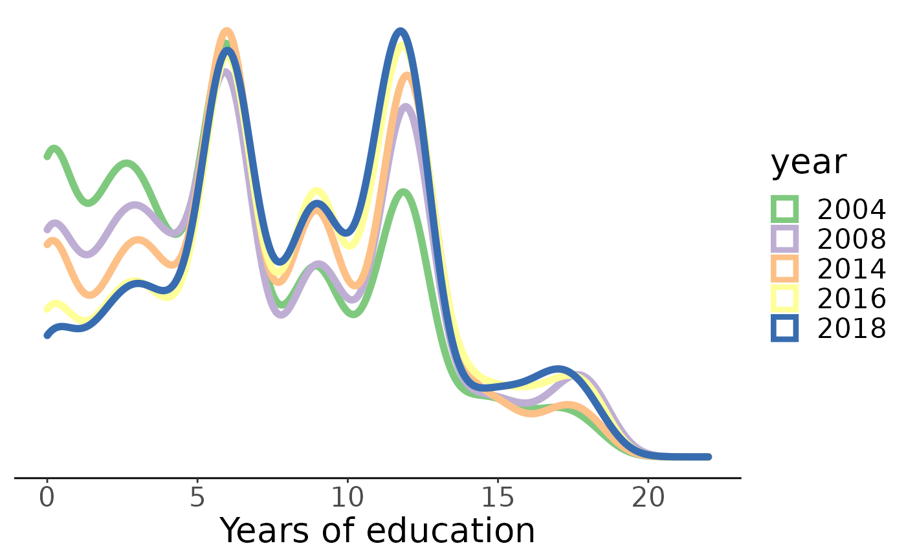
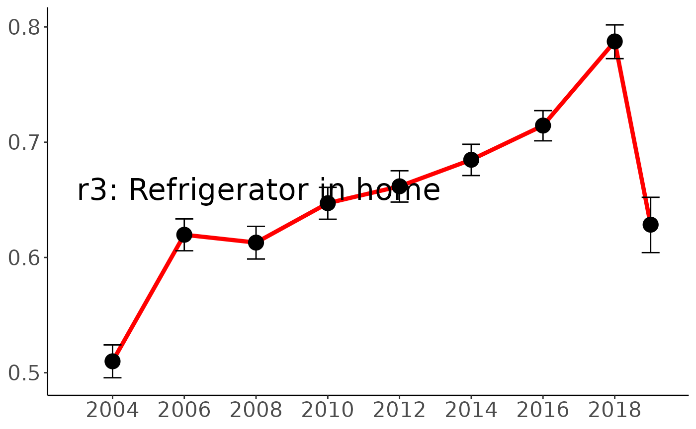
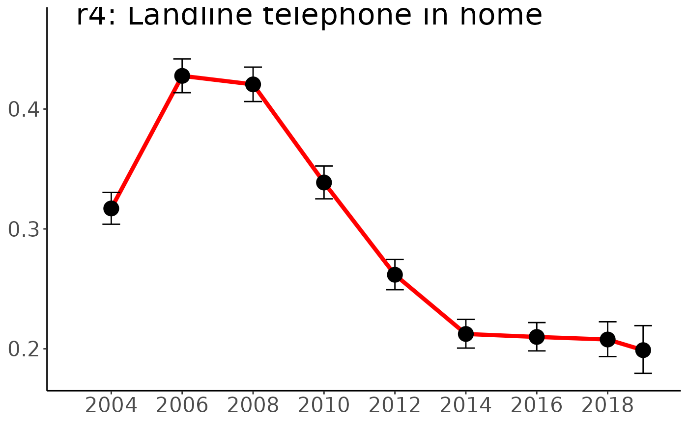
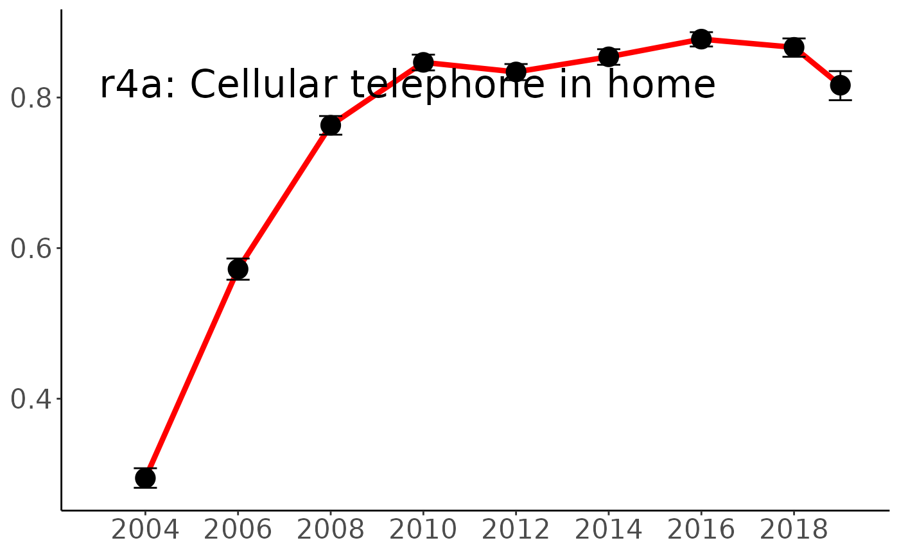
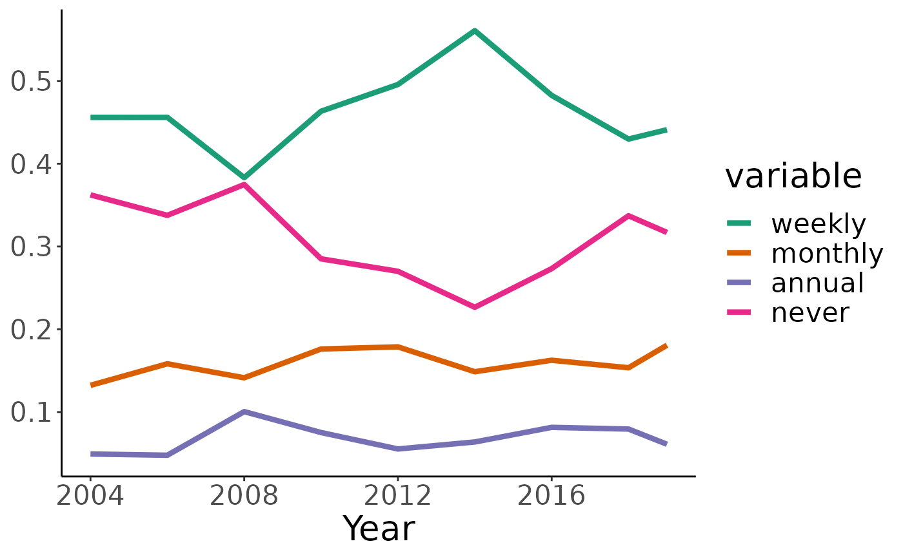
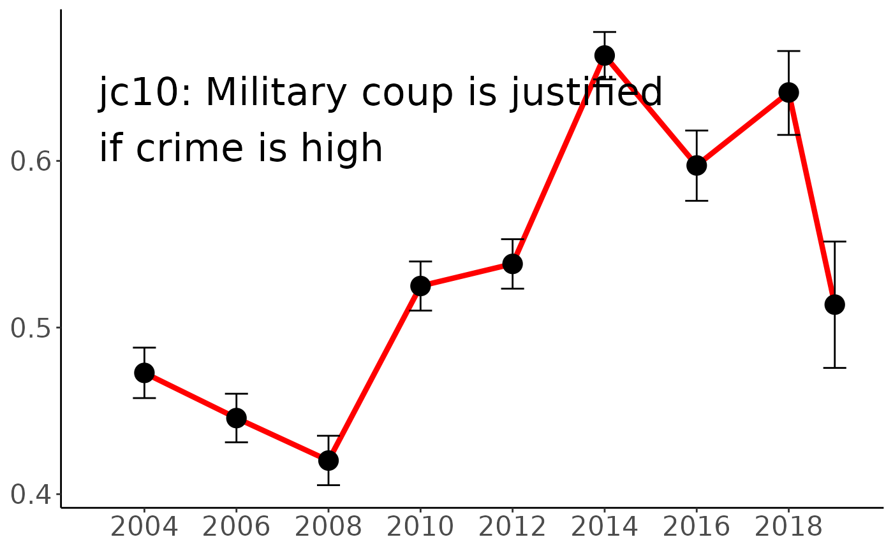
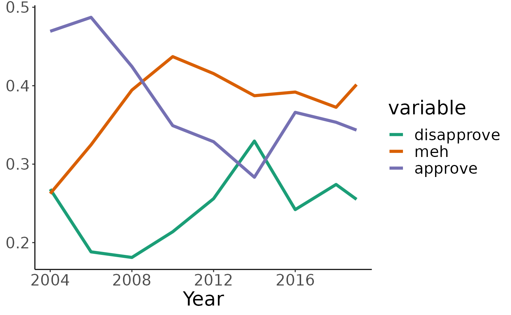
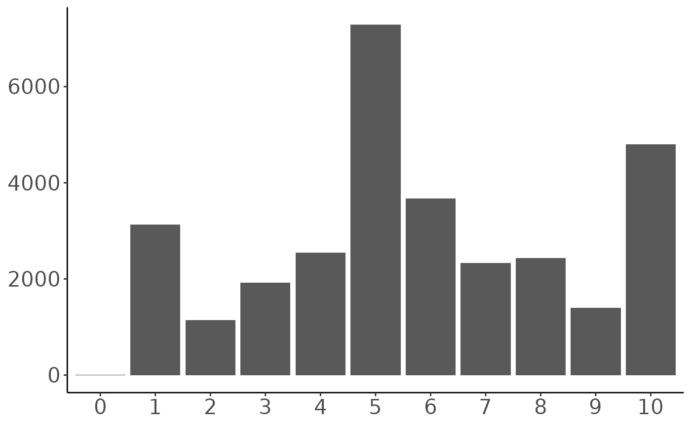
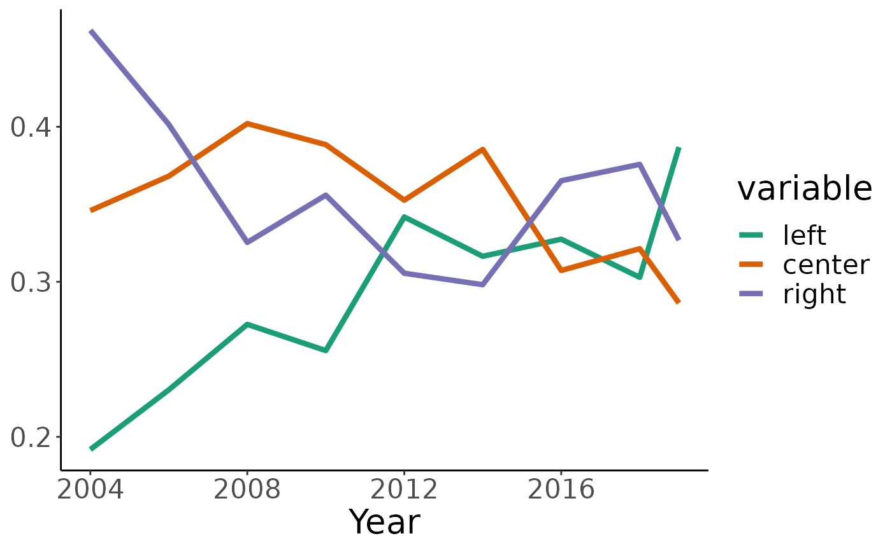

This defines a few methods for visualizing time trends.
Time trends are here assemble by stitching together individual files for the three Northern Triangle countries.
NOTE: While indicator names might be consistent from year to year, values aren’t necessarily. In 2014, cp5 (tried to solve a community problem) was on a scale of 1-4 (4=never). Earlier years just used 1=yes, 2=no, so it looks like there was a big jump in 2008.

Police asking for bribes seems to be on the rise.

Education seems to be improving – there has been a decrease in people with less than five years of education, while the fraction of elementary-school graduates is holding fairly steady and the fraction of high-school graduates is increasing. It would be easy enough to subset this analysis to individual countries or regions.

Refrigerators are on the rise.

Landlines are on their way out.

The cell phone market looks like it saturated in about 2010.

The number of occasional churchgoers has been pretty constant (and low); it looks like the population of weekly churchgoers has been growing while non-attenders have been dropping since 2008. What changed in 2008?

Whatever happened in 2008, it also coincided with a sudden rise in the number of people who are open to the idea of a military coup.

The question about approval of political demonstrations (e5) lets people express a range from strong approval to strong disapproval – most are somewhere in the middle. People who are actively approving of political demonstrations seem to be losing ground to those who are either wishy-washy or disapproving
Again, 2008 looks like some kind of turning point.

The distribution of political ideology (l1) is interesting; the largest group puts themselves smack in the middle, rather than tilting left or right. This centrist group (most likely politically disengaged) has stayed pretty constant over the last decade, while on average the right is losing out to the left.